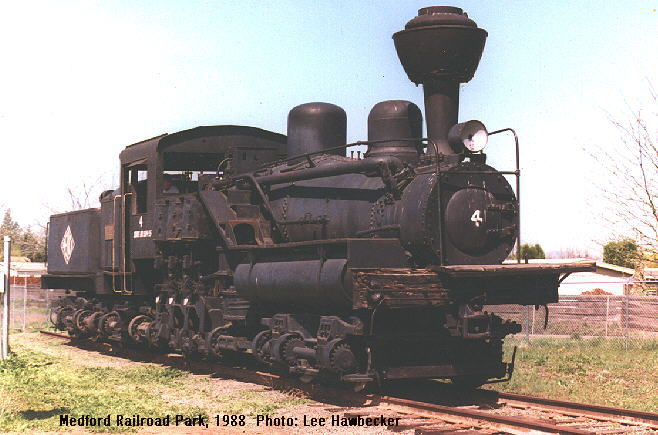

Last updated: 26 June, 2015
| Builder: | Willamette Iron & Steel |
| Build #: | 18 |
| Date: | 1925 |
| Engine #: | 4 |
| Railroad: | Medford Cor |
| Website: | soc-nrhs.org |
| Email: | |
| Location 1: | Medford Railroad Park, 799 Berrydale Avenue, Medford, OR 97501 |
| GPS: | 42.349297,-122.880557 |
| Phone: | |
| Status: | Restoration |
| Notes: | This 3-Truck Willamette, Medco #4, is located at Medford's Railroad Park. Currently, #4 is undergoing restoration by the Southern Oregon Chapter of the National Railway Historical Society. It was built in 1925, for the Owen-Oregon Lumber Co at Medford before going to the Medford Corp. in 1932. It was retired and placed on display in 1959. |
| Class: | 70 ton |
| Gauge: | 4'-8½" |
| F.M.Whyte: | Willamette3Tr |
| Drivers: | |
| Gear Ratio: | |
| Tractive Effort: | |
| Weight: | |
| Weight on Drivers: | |
| Length: | |
| Boiler: | |
| Cylinders: | |
| Top Speed: | |
| Horsepower: | |
| Fuel: | |
| Fuel Type: | |
| Water: | |
| Steam psi: |